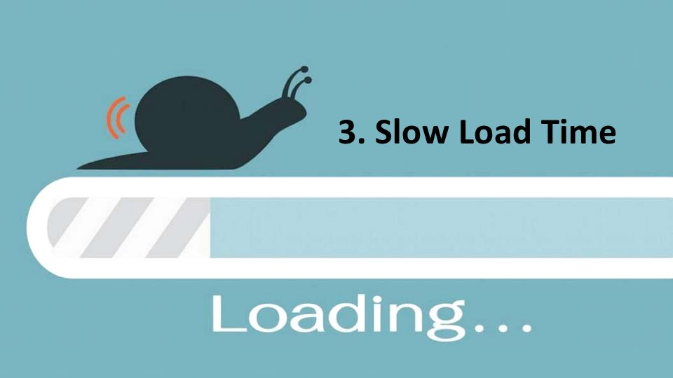
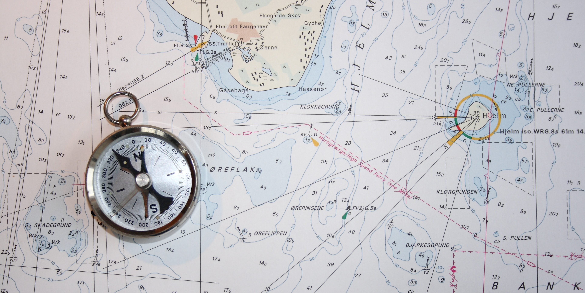

IFACTORY
S crolling in web desgin the long & the stort of it

Story_telling
opportunities
factory a building or group of buildings where goods are made, mainly by machine: · plant a factory or place where power is produced or an industrial process ...SIMPLE INTEREACE FOR SMART DEVICE USERS
factory a building or group of buildings where goods are made, mainly by machine: · plant a factory or place where power is produced or an industrial process ...PUNCHY, STRAIGHT TO THE POINT MESSAGING
factory a building or group of buildings where goods are made, mainly by machine: · plant a factory or place where power is produced or an industrial process ...FASTERST FOR USERS TO REALISE THEIR GOAL
factory a building or group of buildings where goods are made, mainly by machine: · plant a factory or place where power is produced or an industrial process ...long scroll :the good stuff
factory a building or group of buildings where goods are made, mainly by machine: · plant a factory or place where power is produced or an industrial process ...

SLOWER LOAD TIMES
factory a building or group of buildings where goods are made, mainly by machine: · plant a factory or place where power is produced or an industrial process ...

AWKWARD NAVIGATION
factory a building or group of buildings where goods are made, mainly by machine: · plant a factory or place where power is produced or an industrial process ...factory a building or group of buildings where goods are made, mainly by machine: · plant a factory or place where power is produced or an industrial process ...
FACTORY